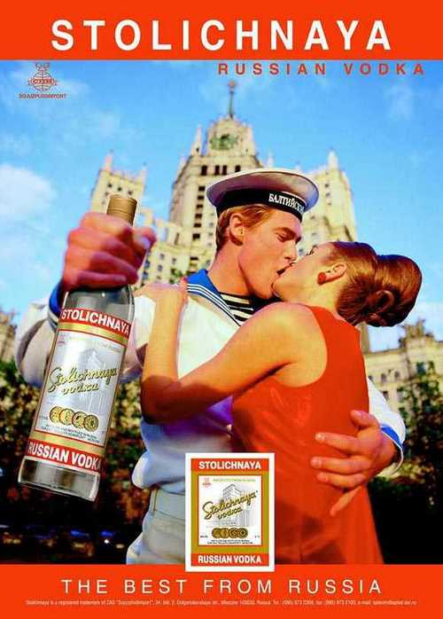

Friday Drink
Vodka
 Vodka (Russian: водка, Ukrainian: горілка, Belarusian: Гарэлка, Polish: wódka) is a distilled beverage. It is composed primarily of water and ethanol with traces of impurities and flavorings. Vodka is made by the distillation of fermented substances such as grains, potatoes, or sometimes fruits and/or sugar. Traditionally prepared vodkas had an alcoholic content of 38% by volume. Today, the standard Ukrainian, Belarusian, Polish, Russian and Lithuanian vodkas are 40% alcohol by volume (ABV) or 80 proof. The European Union has established a minimum of 37.5% ABV for any "European vodka" to be named as such. Products sold as vodka in the United States must have an alcoholic content of 40% or more. For homemade vodkas and distilled beverages referred to as "moonshine", see moonshine by country. Vodka is traditionally drunk neat in the vodka belt countries of Eastern Europe and around the Baltic Sea. It is also commonly used in cocktails and mixed drinks, such as the Bloody Mary, Screwdriver, Sex on the Beach, Moscow Mule, White Russian, Black Russian, vodka tonic, and in a vodka martini.